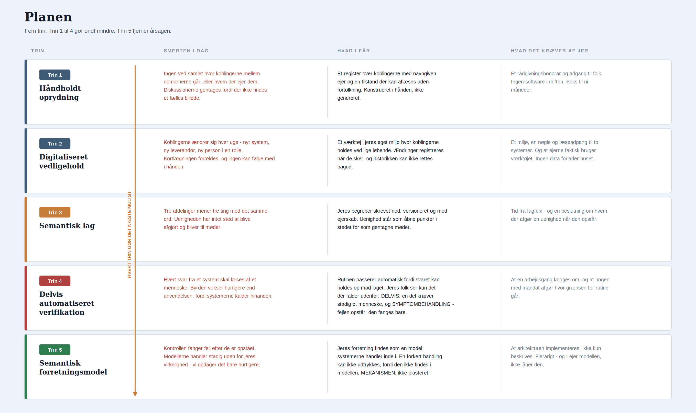

TodayEveryone else appears to have an AI strategy. We have a list of things we have started.
With the layerYou can see what works, what does not, and what is missing before you build on it.
It answers convincingly. Sometimes it is simply wrong.
TodayNobody knows how often. So a human reads all of it - and does so less and less as the pressure rises.
With the layerThe answer has to exist in your own concepts. If it does not, it is rejected rather than passed on.
The bill grows every quarter. Nobody can total up the gain.
TodayConsumption is easy to measure. Value is not, because there is nothing to measure it against.
With the layerUsage is held against something. What does not carry its weight can be closed without an argument.
Five departments, five tools, five definitions of the same word.
TodayEach unit solved its own problem. Together they built five realities that cannot speak to one another.
With the layerOne picture of what runs where - and a named owner on every coupling between them.
If the regulator asks who decided, who answers?
TodayAccountability is personal and cannot be delegated. But the trail behind the decision does not exist.
With the layerMandate, model, basis and action can be produced within hours - a year later too.
FOMO
FOMO. Fourteen pilots. None in production. Today: Everyone else appears to have an AI strategy. We have a list of things we have started. With the layer: You can see what works, what does not, and what is missing before you build on it.
Hallucination. It answers convincingly. Sometimes it is simply wrong. Today: Nobody knows how often. So a human reads all of it - and does so less and less as the pressure rises. With the layer: The answer has to exist in your own concepts. If it does not, it is rejected rather than passed on.
No measurable ROI. The bill grows every quarter. Nobody can total up the gain. Today: Consumption is easy to measure. Value is not, because there is nothing to measure it against. With the layer: Usage is held against something. What does not carry its weight can be closed without an argument.
Anarchy. Five departments, five tools, five definitions of the same word. Today: Each unit solved its own problem. Together they built five realities that cannot speak to one another. With the layer: One picture of what runs where - and a named owner on every coupling between them.
Accountability. If the regulator asks who decided, who answers? Today: Accountability is personal and cannot be delegated. But the trail behind the decision does not exist. With the layer: Mandate, model, basis and action can be produced within hours - a year later too.
The models know the language in your documents. They do not know your reality - what a case is in your organisation, what it may lead to, and when it is closed. As long as that holds, a human has to read every answer.
Verification pressure is not proportional to usage. An agent calling three agents, each calling three more, does not produce three times as much to check - but a tree of decisions where one missed error propagates downward and has to be caught again further down. Double the agents and you multiply the control work.
The situation
Four pressures pulling in different directions
They hit the same executive team at once, and they recommend opposite things. Which is why most end up with either an AI ban or a central AI office. Both make it worse.
Cost
says slow down
AI is in place, spending rises, and the gain cannot be totalled.
Competition
says accelerate
Players without your legacy move faster. Waiting has a price too.
Regulation
says control
Accountability is placed on a person. It cannot be delegated to a vendor.
Anarchy
says centralise
Every department found its own solution and its own vocabulary.
It looks like four problems. It is one absence.
There is no place where the organisation's own concepts live, are versioned and have an owner. Without it, none of the four can be measured, bounded or justified - and every attempt to solve one makes another worse.
The obvious answer
Checking afterwards is a payment, not an exit
Automated checking is a real gain and quick to capture. It is simply not the end of the road, and that is worth knowing before the budget is set.
Without a concept layer
The agent answers in free text. Whether it is right can only be settled by someone who knows the case.
The error occurs - it is caught afterwards
The checking must be maintained forever
Only the form can be checked by machine
Automation gives a discount but does not bend the curve
With a concept layer
The answer must be a symbol that exists in the organisation's own set. If it does not, the answer is refused.
Routine passes and leaves a trail
The human sees only the exception
Substance can be settled too, not only form
A gap becomes backlog instead of an error
The plan
Five steps. The order cannot be reversed.
Steps 1 to 4 reduce the pain. Step 5 removes the cause. Each step solves something that hurts today - and makes the next one possible.

The whole plan on one page. The right-hand column matters most: every step has a price in time and access, not only in money.
Step 01
Hand-built cleanup
The pain today
Nobody has the full picture of where the couplings between domains run, or who owns them. The same discussions repeat because there is no shared picture.
What you get
A register of the couplings with a named owner and a state that can be read without interpretation. Built by hand, not generated.
Step 02
Digitised maintenance
The pain today
The couplings change every week - a new system, a new vendor, a new person in a role. The map goes stale, and nobody can keep up by hand.
What you get
A tool in your own environment where the couplings are kept current. Changes are recorded as they happen, and the history cannot be edited after the fact.
Step 03
Semantic layer
The pain today
Three departments mean three things by the same word. The disagreement has nowhere to be settled and turns into meetings.
What you get
Your concepts written down, versioned and owned. Disagreement stands as open items instead of recurring meetings.
Step 04
Partly automated verification
Treating the symptom
The pain today
Every answer from a system has to be read by a human. The burden grows faster than usage, because the systems call each other.
What you get
Routine passes automatically because the answer can be held against the layer. Some still needs a human - and the error still occurs, it is merely caught.
Step 05
Semantic business model
The mechanism
The pain today
Checking catches errors after they occur. The models still act outside your reality - we simply notice sooner.
What you get
Your business exists as a model the systems act inside. A wrong action cannot be expressed, because it does not exist in the model.
Material to take with you
Board presentationVision, mission, seven objectives and the whole plan. Generic - usable as your own presentation.PDF · 13 pages · 271 kB · v1-0-0
Steps 1 and 2 · couplings and benefitsWhat middle managers and departments gain from the cleanup. Pain and gain per coupling, the dependency graph and maturity per domain.PDF · 25 pages · 181 kB · v1-0-0
Steps 1 and 2 · business caseThe chain of influence and a calculation with uncertainty - what the coupling debt costs, and what the cleanup is worth.PDF · 13 pages · 120 kB · v1-0-0
Step 4 is not wasted work.
The rules you write into the checking are the first building blocks of the model. Step 5 is therefore not a fresh start but a consolidation of something already proven in operation.
How we start
The first step requires no software
No new vendor category. Nothing for security to approve. That is deliberate: the first step must be completable while the rest is still being argued about.
01Meetingone, perhaps two
02Workshopthree weeks
03Executionmapping
04Reportyours to use
Six to nine months. An advisory fee and access to people - the rest is yours.
For discussion
Four questions worth asking internally
The first matters most. If the diagnosis does not hold, nothing after it does.
Are the four pressures really one problem, or are they separate?
Who is liable today for a decision made by a system - and do they know it themselves?
What does the checking cost in a year, if usage doubles and the form is unchanged?
What happens to your measurements the day you change vendor?